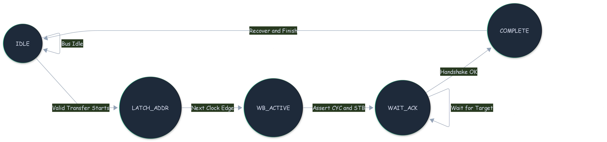
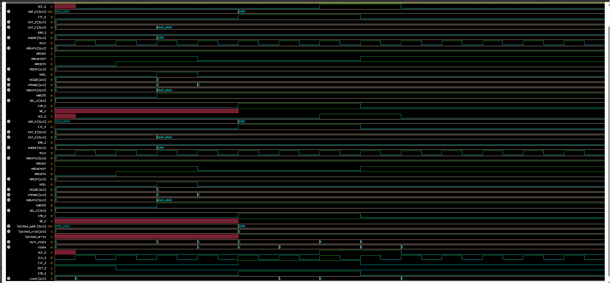

AHB-to-Wishbone Bridge
RTL Implementation & Verification
Submitted by: Arnava Vashishtha
Trainee, Embedded Systems
Submitted by: Arnava Vashishtha
Trainee, Embedded Systems
The bridge maps pipelined AHB signals to flat Wishbone B.3 protocols in real-time.
The Necessity of Stalling: The AHB Master expects a rapid response, but target Wishbone Slaves frequently require wait states to process data.
Execution Strategy:
HREADYOUT = 0 during active Wishbone cycles.ACK_I, the bridge restores HREADYOUT = 1, finalizing the transfer and allowing the AHB Master to proceed.
Bridge Control Logic Overview

HREADYOUT asserts correctly to stall the AHB bus during the wait cycles.X propagation states using explicit zero-initialization.